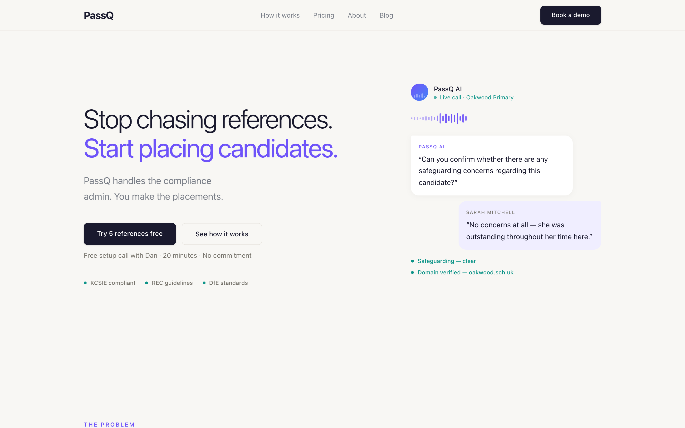
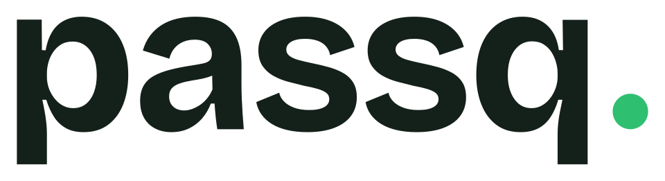

AI builder & founder // I ship working tools, not slides about them
Give me a vague brief with no spec and no team and I'll come back with working software. Most of what I build, I build with AI, every day, hands-on.
selected builds
A learning game I built for my 10-year-old son, who has ADHD. Daily quests earn collectible creatures he levels up and evolves. Every activity maps to a finding in his SEN assessment, and it rewards having a go, never speed or being right. iPad-first, local-first, fully tested. view repo →
An operating system that runs my company day-to-day. A team of specialist AI agents work from plain files, with safe, reviewed write-access to real tools. Written up below. read the thinking →
Servers that give AI agents propose-then-approve access to real business systems, with a human gate before anything leaves the building. Built because off-the-shelf tooling couldn't give agents real reach without handing over control.
An AI co-worker that knows UK education safeguarding and compliance cold, built as both a product and a working member of the team. Domain-expert AI sitting inside a regulated workflow.
directed with AI
I can't design and I can't code. What I can do is tell what good looks like, and direct AI until it gets there. Both of these were built that way.


how i think
How I think AI actually changes a company, and why mine runs on a folder of text files.
AI lands in a business in two stages, and they are not the same size. Stage one is adopting AI into the way you already work: faster drafts, quicker research, a copilot inside the tools you already have. Stage two is rebuilding the work itself around what AI has just made cheap. Almost everyone is busy with stage one. The real change is stage two, and hardly anyone has started.
Stage one is worth doing, but it has a ceiling. Jake Van Clief puts the limit well: AI can't fix a broken process. If your sales process closes 5% of leads, automating it doesn't get you to 20%, it gets you a 5% close rate with less typing. So stage one done properly isn't "add AI". It's map the workflow, cut the friction, then add AI to what's left. Most "AI transformation" stops at the less-typing version and calls it a day.
Stage two asks a different question. Not "where can AI help the way we work now?" but "what would we build if we assumed a team of capable agents was basically free?" Answer that honestly and you don't get your old company with AI bolted on. You get a different shape of company: smaller, flatter, organised around judgement instead of headcount.
My own company is a small example of stage two. It runs on a folder of markdown files. The agents that do the work read and write plain text, and that one boring choice is most of the architecture. Three things fall out of it: it's AI-agnostic, because any model can read a folder and I'm not locked to one vendor's framework; it's legible, because anyone can open a file and read the real state of the business in plain English; and the human stays in the loop by default, because every output is a file I sign off before it goes anywhere, with version control as the audit trail.
The idea that flipped this for me was Van Clief's Interpretable Context Methodology: folders over agents, plain filesystem structure instead of orchestration frameworks. I didn't bolt AI onto an ops tool I already had. I built the ops layer around what agents are genuinely good at. That's the difference between the two stages in one decision.
Now the part people skip past. I can't design and I can't code. What I can do is tell what good looks like, and get it built. I've spent twenty years next to brilliant designers and engineers, doing presales for social media technology and building teams around tools that didn't exist the year before. That taught me the thing that matters most in stage two: knowing what's worth building, and what "good" means for the person who has to use it. AI will build almost anything you can describe. Describing the right thing, and recognising when it's right, is the scarce skill now. Humans and technology are converging on the same work, and the effort shifts from making the thing to deciding what the thing should be.
I'm not theorising from a whiteboard. I've built and run businesses, and I know technology only counts if it does something real on a Tuesday morning. The two-stage view isn't a framework for a slide. It's how I decide what to build next.
Stage one makes you faster. Stage two makes you a different company. I'd rather build the different company.
Influenced by Jake Van Clief's work on the Interpretable Context Methodology: "Stop Building AI Agents. Use This Folder System Instead". The video changed how I thought about working with AI.